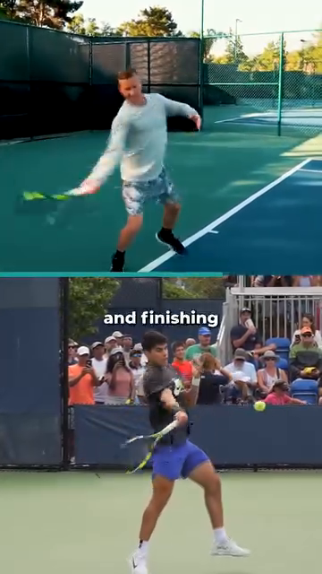

The Angle Atlas — Why Every Joint Angle Decides Stroke Quality
Tập Bản Đồ Góc Cơ Thể — Vì Sao Mỗi Góc Khớp Quyết Định Chất Lượng Cú Đánh
Deep Dive #1 — The Anatomy & Geometry Project for Tennis Players 3.5 → 4.5
Chuyên Đề Số 1 — Dự Án Giải Phẫu & Hình Học cho Người Chơi Tennis 3.5 → 4.5
Tại sao tôi viết chương này / Why I wrote this
Tôi đã chơi tennis hơn 20 năm, và tôi đã xem hàng trăm video kỹ thuật. Phần lớn đều nói chung chung kiểu "đánh từ thấp lên cao", "xoay người", "gối hơi khuỵu". Tôi đã thử tất cả. Một số thứ có tác dụng, một số thì không — và tôi không bao giờ biết tại sao, cho đến khi tôi bắt đầu đo góc thật của các khớp trên sân.
Khi tôi bắt đầu đo bằng video (một chuyện rất đơn giản — dựng điện thoại lên, quay, dừng hình tại điểm tiếp xúc), tôi thấy một điều kỳ lạ: cú forehand của tôi thay đổi hoàn toàn chất lượng khi gối tôi từ 60° đổi sang 75°. Cú volley của tôi cắt vào lưới hay đứng ngoài sân phụ thuộc vào việc khuỷu tay tôi duỗi thẳng hay cong một chút tại điểm tiếp xúc. Trước đó tôi chỉ nghĩ "tôi đánh tốt hôm nay" hay "tôi đánh dở hôm nay". Sau khi đo góc, tôi biết tại sao.
Đó chính là lý do tôi viết chương này. Đây là một cuốn atlas về mọi góc khớp quan trọng trong tennis: gối, hông, cổ chân, vai, khuỷu tay, cổ tay. Với mỗi góc, các bạn sẽ có con số (CÁI GÌ — what) và lý do cơ sinh học (TẠI SAO — why). Đây không phải là cẩm nang kỹ thuật cú đánh. Tôi sẽ không nói "vung thấp lên cao". Tôi sẽ không nói chuỗi động lực như một danh sách. Tôi chỉ nói về góc, khớp, và hình học tại sao chúng quyết định loại và chất lượng cú đánh.
Chương này dành cho người chơi 3.5–4.5 đã biết cú đánh của mình và muốn hiểu TẠI SAO đằng sau hình thức. Đặc biệt hữu ích cho người 50+ vì khớp có giới hạn biên độ riêng — và biết trước giới hạn của mình giúp các bạn chơi quanh nó thay vì đâm vào nó.
Cách dùng: mỗi tuần một chương. Mang một góc ra sân. Đo bằng video. So sánh con số của các bạn với tham khảo. Vậy thôi. Bảng tóm tắt ở cuối để trong túi vợt.
Table of Contents / Mục Lục
| # |
Chapter |
Chương |
Lines |
| 1 |
Why Angles Are the Language of Tennis |
Tại Sao Góc Là Ngôn Ngữ Của Tennis |
~80 |
| 2 |
The Three Coordinate Planes (Vertical, Horizontal, Sagittal) |
Ba Mặt Phẳng Tọa Độ (Dọc, Ngang, Phẳng-Phẳng) |
~95 |
| 3 |
The Lower Body — Feet, Ankles, Knees |
Thân Dưới — Bàn Chân, Cổ Chân, Gối |
~180 |
| 4 |
The Hip — The Pivot of Everything |
Hông — Bản Lề Của Mọi Thứ |
~150 |
| 5 |
The Trunk — Coiling & The Thoracic Spine |
Thân — Xoắn Và Cột Sống Ngực |
~140 |
| 6 |
The Shoulder — The Most Mobile, Most Vulnerable Joint |
Vai — Khớp Di Động Nhất, Dễ Tổn Thương Nhất |
~170 |
| 7 |
The Elbow & Forearm — The Lever System |
Khuỷu Tay & Cẳng Tay — Hệ Thống Đòn Bẩy |
~150 |
| 8 |
The Wrist — The Lock, The Whip, The Fine-Tuner |
Cổ Tay — Ổ Khóa, Cây Roi, Bộ Tinh Chỉnh |
~160 |
| 9 |
The Stroke-by-Stroke Angle Map |
Bản Đồ Góc Theo Từng Cú Đánh |
~200 |
| 10 |
Why Angles Determine Stroke TYPE (not just quality) |
Tại Sao Góc Quyết Định LOẠI Cú Đánh (không chỉ chất lượng) |
~150 |
| 📋 |
Angle Atlas Cheat Sheet |
Bảng Tóm Tắt Góc |
~80 |
Chapter 1 — Why Angles Are the Language of Tennis
Chương 1 — Tại Sao Góc Là Ngôn Ngữ Của Tennis
| 🇺🇸 English |
🇻🇳 Tiếng Việt |
| Friend, here is the secret nobody tells you at the 3.5 wall. Tennis is not a sport of strength. It is not a sport of speed. It is a sport of geometry. Every ball that lands in the right spot, with the right spin, at the right pace — happens because somewhere in your body, an angle was correct. |
Bạn ơi, đây là bí mật không ai nói với bạn ở bức tường 3.5. Tennis không phải môn thể lực. Không phải môn tốc độ. Đó là môn hình học. Mỗi quả bóng rơi đúng chỗ, đúng xoáy, đúng nhịp — đều vì ở đâu đó trong cơ thể bạn, một góc đã đúng. |
| Think about it. The difference between a topspin forehand and a flat forehand is not which muscle you fire. It is the launch angle at contact (about 15–20° upward from horizontal for topspin, 0–5° for flat). That single angle — 15° vs 0° — flips the ball's behavior completely. |
Nghĩ đi. Khác biệt giữa forehand topspin và forehand flat không phải cơ nào bạn kích hoạt. Đó là góc phóng lúc tiếp xúc (khoảng 15–20° lên trên từ đường ngang cho topspin, 0–5° cho flat). Một góc đó — 15° vs 0° — lật ngược hoàn toàn hành vi bóng. |
| The difference between a slice backhand and a topspin backhand is not which leg you push with. It is the face angle of the racket at contact (about -10° to -20° open for slice, +20° to +30° closed for topspin). |
Khác biệt giữa backhand slice và backhand topspin không phải chân nào bạn đạp. Đó là góc mặt vợt lúc tiếp xúc (khoảng -10° đến -20° mở cho slice, +20° đến +30° đóng cho topspin). |
| The big idea — Stroke type is decided by angles at contact. Stroke quality is decided by angles during the kinetic chain that leads to contact. |
Ý tưởng cốt lõi — Loại cú đánh được quyết định bởi góc lúc tiếp xúc. Chất lượng cú đánh được quyết định bởi góc trong suốt chuỗi động lực dẫn đến tiếp xúc. |
| Once you see this, you stop chasing "the right form." You start asking: "What angle is my body trying to create? Is it within the window?" |
Một khi bạn thấy điều này, bạn ngừng săn đuổi "hình thức đúng". Bạn bắt đầu hỏi: "Cơ thể tôi đang cố tạo góc nào? Có nằm trong cửa sổ không?" |
| For 3.5 → 4.5 players, this is the unlock. At 3.5, you copy form. At 4.0, you understand the chain. At 4.5, you understand the angles — and angles are numbers, and numbers don't lie. |
Với người chơi 3.5 → 4.5, đây là chìa khóa. Ở 3.5, bạn bắt chước hình thức. Ở 4.0, bạn hiểu chuỗi. Ở 4.5, bạn hiểu góc — và góc là con số, con số không nói dối. |
| Master cue: "Don't ask what to do. Ask what angle to create." |
Câu nhắc tổng: "Đừng hỏi phải làm gì. Hỏi phải tạo góc nào." |
Chapter 2 — The Three Coordinate Planes (Vertical, Horizontal, Sagittal)
Chương 2 — Ba Mặt Phẳng Tọa Độ (Dọc, Ngang, Sagittal)
| 🇺🇸 English |
🇻🇳 Tiếng Việt |
| Before we measure angles, we need a frame. Your body is a 3D machine. Joints move in three planes. If you only think in 2D (the side view you see on TV), you will miss half the angles that decide stroke quality. |
Trước khi đo góc, ta cần khung. Cơ thể bạn là cỗ máy 3D. Khớp chuyển động trong ba mặt phẳng. Nếu chỉ nghĩ 2D (góc nhìn bên bạn thấy trên TV), bạn sẽ bỏ lỡ một nửa số góc quyết định chất lượng cú đánh. |
| The three planes: |
Ba mặt phẳng: |
| 1. Vertical plane (also called coronal or frontal) — Imagine a wall in front of you. Movements in this plane are up-down and side-to-side. The classic TV camera sees this plane. Knee flexion, hip abduction, shoulder lateral raise, wrist radial/ulnar deviation all happen here. |
1. Mặt phẳng dọc (còn gọi là coronal hay trán) — Tưởng tượng bức tường trước mặt bạn. Chuyển động trong mặt phẳng này là lên-xuống và ngang. Camera TV cổ điển thấy mặt phẳng này. Gập gối, dạng hông, nâng vai ngang, lệch cổ tay quay/trụ xảy ra ở đây. |
| 2. Horizontal plane (also called transverse) — Imagine a tabletop at waist height. Movements in this plane are rotation around the vertical axis. Hip rotation, shoulder rotation, trunk twist — the engines of every groundstroke — happen here. This is the plane most recreational players UNDERUSE. |
2. Mặt phẳng ngang (còn gọi là transverse) — Tưởng tượng mặt bàn ngang hông. Chuyển động trong mặt phẳng này là xoay quanh trục đứng. Xoay hông, xoay vai, xoắn thân — động cơ của mọi cú groundstroke — xảy ra ở đây. Đây là mặt phẳng đa số người chơi phong trào ÍT DÙNG. |
| 3. Sagittal plane (the side view) — Imagine a wall to your right. Movements in this plane are forward-backward. Forward lunge, knee flexion-extension during split-step, racket drop into slot happen here. Coaches call this the "power plane" because gravity loads it. |
3. Mặt phẳng phẳng-phẳng (sagittal, góc nhìn bên) — Tưởng tượng bức tường bên phải bạn. Chuyển động trong mặt phẳng này là tới-lùi. Bước tới, gập-duỗi gối khi split-step, rơi vợt vào rãnh xảy ra ở đây. HLV gọi đây là "mặt phẳng sức mạnh" vì trọng lực nạp vào nó. |
| Why this matters for angles: an angle in the vertical plane (like 90° elbow flexion) means something completely different from an angle in the horizontal plane (like 45° shoulder rotation). When the source says "the racket face is at 110°," you need to ask: 110° in WHICH plane? |
Tại sao điều này quan trọng cho góc: một góc trong mặt phẳng dọc (như 90° gập khuỷu) có ý nghĩa hoàn toàn khác một góc trong mặt phẳng ngang (như 45° xoay vai). Khi nguồn nói "mặt vợt ở 110°", bạn cần hỏi: 110° ở mặt phẳng NÀO? |
| For 50+ players — The horizontal plane is your friend. As cartilage thins, vertical loading (sagittal plane) hurts knees and back. Rotational loading (horizontal plane) is easier on joints and uses bigger muscles (glutes, obliques). Use rotation as your main engine. |
Với người 50+ — Mặt phẳng ngang là bạn. Khi sụn mỏng đi, tải dọc trục (mặt phẳng sagittal) đau gối và lưng. Tải xoay (mặt phẳng ngang) dễ lên khớp hơn và dùng cơ lớn (mông, chéo bụng). Dùng xoay làm động cơ chính. |
| Master cue: "Think in three planes. Most recreational players live in one." |
Câu nhắc tổng: "Nghĩ theo ba mặt phẳng. Đa số người phong trào chỉ sống ở một." |
Chapter 3 — The Lower Body — Feet, Ankles, Knees
Chương 3 — Thân Dưới — Bàn Chân, Cổ Chân, Gối
| 🇺🇸 English |
🇻🇳 Tiếng Việt |
| The ground is your battery. Every powerful shot starts with feet on court. Here are the angles that matter, with the WHY for each. |
Mặt đất là pin của bạn. Mọi cú đánh mạnh bắt đầu từ chân trên sân. Đây là các góc quan trọng, kèm TẠI SAO cho mỗi cái. |
3.1 — Góc Bàn Chân (góc ngón chân so với hướng bóng)
| 🇺🇸 English |
🇻🇳 Tiếng Việt |
| Forehand: front foot points about 30°–45° toward the net post (closed stance) or 15°–30° toward the sideline (neutral/open stance). |
Forehand: chân trước chỉ khoảng 30°–45° về cột lưới (closed stance) hoặc 15°–30° về biên dọc (neutral/open stance). |
| Why this angle determines quality — The foot angle pre-loads the hip rotation. If your toes point 45° toward the net, your hip can only rotate ~45° before the knee's range of motion stops the rotation. If your toes point 15° toward the sideline, your hip can rotate up to ~75°. More rotation = more racket-head speed = more power. |
Tại sao góc này quyết định chất lượng — Góc chân nạp trước cho xoay hông. Nếu ngón chân chỉ 45° về lưới, hông bạn chỉ xoay được ~45° trước khi biên độ gối chặn lại. Nếu ngón chân chỉ 15° về biên, hông xoay được tới ~75°. Xoay nhiều hơn = tốc độ đầu vợt nhiều hơn = lực nhiều hơn. |
| Backhand 2-handed: both feet roughly parallel, ~10°–20° toward the net post. The 2-handed backhand uses LESS hip rotation than the forehand because the chest rotation pulls both arms. |
Backhand 2 tay: hai chân gần song song, ~10°–20° về cột lưới. Backhand 2 tay dùng ÍT xoay hông hơn forehand vì xoay ngực kéo cả hai tay. |
| Volley: front foot points about 30°–60° toward the net, smaller stance, weight on balls of feet. The angle is steeper because you want short directional pushes, not big swings. |
Volley: chân trước chỉ khoảng 30°–60° về lưới, tư thế hẹp hơn, trọng lượng trên mũi chân. Góc dốc hơn vì bạn muốn đẩy ngắn theo hướng, không phải vung lớn. |
| Serve: front foot angled at ~20° toward the net post, back foot nearly parallel to baseline (~0°–10°). |
Serve: chân trước nghiêng ~20° về cột lưới, chân sau gần song song baseline (~0°–10°). |
| The single biggest mistake: front foot pointing straight at the net (0°) on a forehand. This kills hip rotation and forces the shoulder to do all the work. Shoulder then hurts. |
Lỗi lớn nhất: chân trước chỉ thẳng lưới (0°) trên forehand. Điều này giết xoay hông và bắt vai làm tất cả. Vai sẽ đau. |
3.2 — Góc Gót Nhấc Khỏi Đất (góc giữa lòng bàn chân sau và mặt sân, lúc tiếp xúc bóng)
| 🇺🇸 English |
🇻🇳 Tiếng Việt |
| Forehand: ~50°–60° heel lift at contact. The heel is high, weight is on the ball of the foot and big toe. |
Forehand: ~50°–60° gót nâng lúc tiếp xúc. Gót cao, trọng lượng trên mũi chân và ngón cái. |
| Why this angle determines quality — At 0° heel-down, the Achilles tendon is slack — it cannot store energy. At 50°–60°, the Achilles is stretched to its maximum energy storage position, and the calf muscle (gastrocnemius + soleus) is also pre-stretched. The release happens in 0.05 seconds. |
Tại sao góc này quyết định chất lượng — Ở 0° gót chạm đất, gân Achilles chùng — không thể tích trữ năng lượng. Ở 50°–60°, gân Achilles được kéo giãn tới vị trí tích năng lượng cực đại, và cơ bắp chân (gastrocnemius + soleus) cũng được giãn trước. Sự giải phóng xảy ra trong 0.05 giây. |
| Serve: ~60°–70° heel lift at launch. Higher than groundstrokes because the entire body weight is being pushed UP (you are jumping), not just rotating. |
Serve: ~60°–70° gót nâng lúc tung bóng. Cao hơn groundstrokes vì toàn bộ trọng lượng cơ thể đang được đẩy LÊN (bạn đang nhảy), không chỉ xoay. |
| Volley: ~15°–25° heel lift, much smaller. You are NOT trying to generate power — you are redirecting an already-fast ball. A big heel lift on a volley means you lost balance. |
Volley: ~15°–25° gót nâng, nhỏ hơn nhiều. Bạn KHÔNG cố tạo lực — bạn đang chuyển hướng bóng đã nhanh. Gót nâng lớn ở volley nghĩa là bạn mất thăng bằng. |
| For 50+ players — The Achilles tendon loses elasticity with age. Maximum storage at 50°–60° is realistic, but you need 5–8 minutes of calf raises in your warm-up to "wake up" the spring. Cold Achilles = injury risk. |
Với người 50+ — Gân Achilles mất độ đàn hồi theo tuổi. Tích năng lượng cực đại ở 50°–60° là khả thi, nhưng bạn cần 5–8 phút nhón gót trong khởi động để "đánh thức" lò xo. Achilles lạnh = rủi ro chấn thương. |
3.3 — Knee Flexion Angle (the bend of the knee, 180° = straight leg)
3.3 — Góc Gập Gối (độ gập gối, 180° = chân thẳng)
| 🇺🇸 English |
🇻🇳 Tiếng Việt |
| Forehand (loaded): 120°–135° knee flexion at the lowest point. (180° minus 45°–60° flexion = 120°–135°.) |
Forehand (nạp): 120°–135° gập gối lúc thấp nhất. (180° trừ 45°–60° gập = 120°–135°.) |
| Why this angle determines quality — Knee flexion is the battery charge of the whole kinetic chain. Less than 110° (very bent) and you cannot push up fast enough. More than 150° (almost straight) and the legs cannot generate force. The 120°–135° window is where the quadriceps can produce peak force in minimum time. |
Tại sao góc này quyết định chất lượng — Gập gối là mức sạc pin của toàn chuỗi động lực. Dưới 110° (rất gập) thì không đẩy lên đủ nhanh. Trên 150° (gần thẳng) thì chân không tạo lực được. Cửa sổ 120°–135° là nơi tứ đầu đùi tạo lực đỉnh trong thời gian tối thiểu. |
| Serve (trophy position): ~130°–140° front knee flexion. |
Serve (vị trí trophy): ~130°–140° gập gối trước. |
| Why this angle is BIGGER than forehand — Because you are loading both legs (a leg-press-like action), and you need a smaller ROM (range of motion) to explode upward. Also, both knees bending creates the upward thrust for the jump. |
Tại sao góc này LỚN hơn forehand — Vì bạn nạp cả hai chân (giống động tác leg-press), và cần biên độ nhỏ hơn để bật lên. Cũng vì cả hai gối gập tạo lực đẩy lên cho cú nhảy. |
| Split-step: ~135°–145° knee flexion, very short hold (0.1–0.2s). |
Split-step: ~135°–145° gập gối, giữ rất ngắn (0.1–0.2s). |
| Why split-step uses BIGGER angle (less bent) than forehand — You must be able to push off in ANY direction in <0.3s. If you are too low (120°), you can only push off in two directions (forward, backward). If you are at 140°, you can push off diagonally, sideways, anywhere. |
Tại sao split-step dùng góc LỚN hơn (gập ít hơn) forehand — Bạn phải bật theo BẤT KỲ hướng nào trong <0.3s. Nếu bạn quá thấp (120°), bạn chỉ bật được hai hướng (tới, lùi). Nếu ở 140°, bạn bật chéo, ngang, đâu cũng được. |
| For 50+ players — Knee flexion <110° puts huge pressure on the patellar tendon (the "jumper's knee" risk). Keep flexion between 120°–140° on groundstrokes, <140° on serve. Never lock the knee straight (180°) — that destroys cartilage. |
Với người 50+ — Gập gối <110° tạo áp lực lớn lên gân xương bánh chè (rủi ro "đầu gối người nhảy"). Giữ gập gối 120°–140° trên groundstrokes, <140° trên serve. Không bao giờ khóa gối thẳng (180°) — điều đó phá hủy sụn. |
Chapter 4 — The Hip — The Pivot of Everything
Chương 4 — Hông — Bản Lề Của Mọi Thứ
| 🇺🇸 English |
🇻🇳 Tiếng Việt |
| The hip is the engine of every tennis stroke. Three angles matter here, and they each have different WHYs. |
Hông là động cơ của mọi cú tennis. Ba góc quan trọng ở đây, mỗi cái có TẠI SAO khác nhau. |
4.1 — Hip-Torso Angle (the angle between your thigh and your torso, in the sagittal plane)
4.1 — Góc Hông-Thân (góc giữa đùi và thân, mặt phẳng sagittal)
| 🇺🇸 English |
🇻🇳 Tiếng Việt |
| Forehand (loaded): 50°–65° between thigh and torso (think of it as: how far forward is your chest leaning over your front thigh). |
Forehand (nạp): 50°–65° giữa đùi và thân (nghĩ: ngực bạn nghiêng về phía trước trên đùi trước bao xa). |
| Why this angle determines quality — Less than 50° means you are too upright — your chest is not over the front leg, so you cannot push off it. More than 70° and you lose balance backward on the follow-through. The 50°–65° window gives you maximum stretch of the hip flexor (psoas + iliacus) and glute max, which together produce the explosive hip extension that drives the kinetic chain. |
Tại sao góc này quyết định chất lượng — Dưới 50° nghĩa là bạn quá thẳng đứng — ngực không ở trên chân trước, nên không đẩy khỏi nó được. Trên 70° và bạn mất thăng bằng ra sau khi follow-through. Cửa sổ 50°–65° cho bạn giãn cơ tối đa cơ gập hông (psoas + iliacus) và mông lớn, cùng nhau tạo duỗi hông nổ mà dẫn chuỗi động lực. |
| Backhand (loaded): 45°–55° — slightly less than forehand because you want the chest facing more toward the side fence (to pull both arms across). |
Backhand (nạp): 45°–55° — ít hơn forehand một chút vì bạn muốn ngực hướng về hàng rào bên hơn (để kéo cả hai tay ngang qua). |
| Serve (trophy): 30°–45° — smaller angle, body more upright, because the loading direction is UP not forward. |
Serve (trophy): 30°–45° — góc nhỏ hơn, cơ thể thẳng hơn, vì hướng nạp là LÊN chứ không tới. |
| For 50+ players — Flexibility drops fast after 50. Many 50+ players cannot reach 50°. If you can only manage 55°–65°, that is your window, not a failure. The power loss is ~15%, the injury risk reduction is ~50%. |
Với người 50+ — Dẻo dai giảm nhanh sau 50 tuổi. Nhiều người 50+ không tới được 50°. Nếu bạn chỉ quản lý được 55°–65°, đó là cửa sổ của bạn, không phải thất bại. Mất lực ~15%, giảm rủi ro chấn thương ~50%. |
4.2 — Hip Rotation Angle (the angle the pelvis turns around the vertical axis, in the horizontal plane)
4.2 — Góc Xoay Hông (góc khung chậu xoay quanh trục đứng, mặt phẳng ngang)
| 🇺🇸 English |
🇻🇳 Tiệt Việt |
| Forehand (loaded): ~60° pelvis turned AWAY from the net. (At contact: ~0°, fully facing the ball.) |
Forehand (nạp): ~60° khung chậu xoay RA XA lưới. (Lúc tiếp xúc: ~0°, đối diện bóng hoàn toàn.) |
| Why this angle determines quality — Hip rotation is the single biggest contributor to racket-head speed in tennis. Studies show shoulder rotation contributes ~30% to racket speed, hip rotation contributes ~50%, and the wrist snap contributes ~20%. |
Tại sao góc này quyết định chất lượng — Xoay hông là đóng góp lớn nhất vào tốc độ đầu vợt trong tennis. Nghiên cứu cho thấy xoay vai đóng góp ~30% tốc độ vợt, xoay hông đóng góp ~50%, và bẻ cổ tay đóng góp ~20%. |
| The 50–60° window is not arbitrary — The hip joint's bony anatomy (femoral head inside acetabulum) allows about 45° external rotation when the hip is flexed (like in a forehand load). Add ~10°–15° from lumbar spine rotation, and you get ~60°. Going past 60° requires the knee to absorb unnatural torque, which is why forcing more hip turn feels "stuck." |
Cửa sổ 50–60° không tùy ý — Giải phẫu xương hông (chỏm xương đùi trong ổ cối) cho phép ~45° xoay ngoài khi hông gập (như lúc nạp forehand). Cộng ~10°–15° từ xoay cột sống thắt lưng, được ~60°. Qua 60° đòi hỏi gối hấp thụ mô-men xoắn bất thường, đó là lý do ép xoay hông thêm cảm thấy "kẹt". |
| Backhand 2H (loaded): ~45°–55° pelvis turned away — slightly less than forehand because the chest rotation does more work. |
Backhand 2 tay (nạp): ~45°–55° khung chậu xoay ra — ít hơn forehand vì xoay ngực làm nhiều hơn. |
| Volley (loaded): ~20°–30° pelvis turn — small because you have no time. |
Volley (nạp): ~20°–30° xoay khung chậu — nhỏ vì không có thời gian. |
| Serve (loaded, "trophy"): ~80°–100° total body rotation (pelvis + shoulders combined). The hip alone rotates ~50°, the shoulders rotate an ADDITIONAL ~50° on top — this is called "shoulder over-rotation" or "X-factor stretch." |
Serve (nạp, "trophy"): ~80°–100° xoay toàn thân (hông + vai cộng lại). Hông một mình xoay ~50°, vai xoay THÊM ~50° lên trên — gọi là "xoay vai quá mức" hay "giãn X-factor". |
4.3 — Hip Hinge Depth (how far your hips sit back, like a squat)
4.3 — Độ Sâu Bản Lề Hông (hông ngồi lùi bao xa, giống squat)
| 🇺🇸 English |
🇻🇳 Tiếng Việt |
| Forehand (loaded): Hips sit back as if sitting on a chair — about half-way down between standing and full squat. |
Forehand (nạp): Hông ngồi lùi như ngồi ghế — khoảng một nửa giữa đứng và squat đầy đủ. |
| Why this depth — Half-squat depth is where gluteus maximus activation peaks. Going lower shifts the work to quads (and hurts the knees). Going higher shifts work to lower back (and hurts the discs). |
Tại sao độ sâu này — Độ sâu nửa squat là nơi kích hoạt mông lớn đạt đỉnh. Thấp hơn chuyển làm việc sang tứ đầu đùi (và đau gối). Cao hơn chuyển sang lưng dưới (và đau đĩa đệm). |
| Serve (trophy): Slightly deeper than forehand — about two-thirds down the squat range. This is because the back leg needs to "wind up" the glute and hamstring for the upward jump. |
Serve (trophy): Sâu hơn forehand một chút — khoảng hai phần ba biên độ squat. Vì chân sau cần "lên dây cót" mông và gân kheo cho cú nhảy lên. |
Chapter 5 — The Trunk — Coiling & The Thoracic Spine
Chương 5 — Thân — Xoắn Và Cột Sống Ngực
| 🇺🇸 English |
🇻🇳 Tiếng Việt |
| The trunk is not one rigid block. It has three sections — lumbar (lower back), thoracic (mid back), cervical (neck). Each has different mobility and different angles to manage. |
Thân không phải khối cứng. Nó có ba phần — thắt lưng (lưng dưới), ngực (lưng giữa), cổ. Mỗi phần có độ linh hoạt và góc khác nhau. |
5.1 — Lumbar Extension Angle (how much your lower back arches)
5.1 — Góc Duỗi Thắt Lưng (lưng dưới cong bao nhiêu)
| 🇺🇸 English |
🇻🇳 Tiếng Việt |
| Forehand (loaded): ~15°–25° lumbar extension. The lower back curves IN, like a slight back-arch. |
Forehand (nạp): ~15°–25° duỗi thắt lưng. Lưng dưới cong VÀO, như ưỡn nhẹ. |
| Why this angle determines quality — Lumbar extension pre-loads the posterior chain (erector spinae, multifidus). When you uncoil, these muscles fire and add ~10–15% more racket speed. BUT — too much extension (>30°) compresses the L4-L5 and L5-S1 discs, which are already the most-injured discs in tennis. |
Tại sao góc này quyết định chất lượng — Duỗi thắt lưng nạp trước cho chuỗi sau (cơ dựng sống, multifidus). Khi bạn bung xoắn, các cơ này bắn ra và thêm ~10–15% tốc độ vợt. NHƯNG — duỗi quá nhiều (>30°) nén các đĩa L4-L5 và L5-S1, vốn đã là các đĩa bị chấn thương nhiều nhất trong tennis. |
| The 25° limit — This is not arbitrary. Cadaver studies show that disc fibers start to fail at 28°–30° of lumbar extension under load. Recreational players should stay well below this. |
Giới hạn 25° — Không tùy ý. Nghiên cứu trên xác cho thấy sợi đĩa bắt đầu hỏng ở 28°–30° duỗi thắt lưng dưới tải. Người chơi phong trào nên ở dưới mức này. |
| For 50+ players — Disc hydration drops ~1% per year after age 30. By 50, your discs are ~20% less hydrated than at 20. Keep lumbar extension under 20°, always. The power loss is small; the back-pain prevention is huge. |
Với người 50+ — Đĩa mất nước ~1% mỗi năm sau 30 tuổi. Đến 50 tuổi, đĩa bạn mất nước ~20% so với lúc 20. Giữ duỗi thắt lưng dưới 20°, luôn luôn. Mất lực ít; phòng đau lưng rất lớn. |
5.2 — Thoracic Rotation Angle (how much your mid-back rotates)
5.2 — Góc Xoay Ngực (lưng giữa xoay bao nhiêu)
| 🇺🇸 English |
🇻🇳 Tiếng Việt |
| Forehand (loaded): ~40°–50° thoracic rotation. The mid-back turns toward the back fence. |
Forehand (nạp): ~40°–50° xoay ngực. Lưng giữa xoay về hàng rào sau. |
| Why this angle matters more than lumbar — The thoracic spine (T1–T12) is DESIGNED for rotation. Each of the 12 thoracic vertebrae has facets that allow about 3°–5° of rotation, totaling ~35°–50°. The lumbar spine (L1–L5) is DESIGNED for stability — only ~10°–15° total rotation. |
Tại sao góc này quan trọng hơn thắt lưng — Cột sống ngực (T1–T12) ĐƯỢC THIẾT KẾ để xoay. Mỗi trong 12 đốt sống ngực có mặt khớp cho phép ~3°–5° xoay, tổng ~35°–50°. Cột sống thắt lưng (L1–L5) ĐƯỢC THIẾT KẾ để ổn định — chỉ ~10°–15° xoay tổng. |
| The KEY insight — If your thoracic spine is stiff (a desk-job problem), the body will ROTATE the lumbar spine to compensate. This is where back injuries come from. Train thoracic rotation (90/90 stretches, open-book stretches) to PROTECT the lumbar. |
Insight THEN CHỐT — Nếu cột sống ngực cứng (vấn đề ngồi bàn), cơ thể sẽ XOAY cột sống thắt lưng để bù. Đây là nguồn chấn thương lưng. Tập xoay ngực (giãn 90/90, giãn mở sách) để BẢO VỆ thắt lưng. |
| Serve (loaded, trophy): ~70°–90° thoracic + shoulder rotation combined — the famous "coil." |
Serve (nạp, trophy): ~70°–90° xoay ngực + vai cộng lại — "xoắn" nổi tiếng. |
5.3 — Trunk Side-Bend Angle (lateral flexion — how much the trunk leans sideways)
5.3 — Góc Nghiêng Ngang Thân (gập bên — thân nghiêng sang bên bao nhiêu)
| 🇺🇸 English |
🇻🇳 Tiếng Việt |
| Forehand: ~5°–15° trunk side-bend toward the ball. |
Forehand: ~5°–15° nghiêng ngang thân về phía bóng. |
| Why this angle matters — Side-bend pre-loads the lateral chain (quadratus lumborum, obliques). On a heavy forehand, the body uses this to "pull down" the racket through contact, adding topspin. |
Tại sao góc này quan trọng — Nghiêng ngang nạp trước chuỗi bên (cơ vuông thắt lưng, chéo bụng). Trên forehand nặng, cơ thể dùng điều này để "kéo xuống" vợt qua tiếp xúc, thêm topspin. |
| Volley: ~0°–5° — almost no side-bend. You stay vertical so you can push in any direction. |
Volley: ~0°–5° — hầu như không nghiêng. Bạn đứng thẳng để đẩy bất kỳ hướng nào. |
Chapter 6 — The Shoulder — The Most Mobile, Most Vulnerable Joint
Chương 6 — Vai — Khớp Di Động Nhất, Dễ Tổn Thương Nhất
| 🇺🇸 English |
🇻🇳 Tiếng Việt |
| The shoulder is a $400,000 joint. That's roughly the cost of a shoulder surgery in the US. The shoulder has the largest range of motion of any joint in your body, which is exactly why it's the most vulnerable. |
Vai là khớp 400.000 đô. Đó là chi phí gần đúng của phẫu thuật vai ở Mỹ. Vai có biên độ chuyển động lớn nhất trong các khớp cơ thể, cũng là lý do nó dễ tổn thương nhất. |
| Shoulder anatomy, fast — The shoulder is a ball-and-socket joint, but the socket (glenoid) is shallow — only covers ~1/3 of the ball (humeral head). Stability comes from FOUR muscles called the rotator cuff: supraspinatus, infraspinatus, teres minor, subscapularis. These four muscles are small but they are the SHOULDER'S LIGAMENTS. |
Giải phẫu vai, nhanh — Vai là khớp cầu-ổ cối, nhưng ổ cối (glenoid) nông — chỉ che ~1/3 của đầu cầu (chỏm xương cánh tay). Sự ổn định đến từ BỐN cơ gọi là chóp xoay: trên gai, dưới gai, tròn bé, dưới vai. Bốn cơ này nhỏ nhưng là DÂY CHẰNG CỦA VAI. |
6.1 — Shoulder Abduction Angle (the arm lifted out to the side, 0° = arm down, 90° = arm horizontal)
6.1 — Góc Dạng Vai (tay nâng sang bên, 0° = tay xuống, 90° = tay ngang)
| 🇺🇸 English |
🇻🇳 Tiếng Việt |
| Forehand (loaded): ~90°–110° shoulder abduction. The racket arm is up and slightly behind the head. |
Forehand (nạp): ~90°–110° dạng vai. Tay vợt lên cao và hơi ra sau đầu. |
| Why this angle — 90° is the "hand-up" salute position. 110° is slightly past horizontal. At 90°–110°, the deltoid (middle fibers) and supraspinatus are aligned to produce force in the direction you want the racket to travel. |
Tại sao góc này — 90° là vị trí "giơ tay chào". 110° hơi quá ngang. Ở 90°–110°, delta (sợi giữa) và trên gai thẳng hàng để tạo lực theo hướng bạn muốn vợt đi. |
| The supraspinatus danger zone — Between 60° and 120° of abduction, the supraspinatus tendon rubs against the acromion bone above it. This is called the "painful arc." Recreational players who serve with too much internal rotation in this range damage the supraspinatus. Keep the elbow at or slightly above shoulder height, not above. |
Vùng nguy hiểm của trên gai — Giữa 60° và 120° dạng vai, gân trên gai cọ vào xương mỏm cùng vai phía trên. Gọi là "cung đau". Người chơi phong trào giao bóng với xoay trong quá nhiều trong khoảng này hỏng trên gai. Giữ khuỷu ở hoặc hơi cao hơn vai, không cao hơn vai. |
| Serve (trophy): ~120°–140° shoulder abduction — arm fully extended up and slightly behind. The supraspinatus here is in its MOST VULNERABLE position. This is why serving is the #1 cause of rotator cuff injury. |
Serve (trophy): ~120°–140° dạng vai — tay duỗi thẳng lên và hơi ra sau. Trên gai ở đây ở vị trí DỄ TỔN THƯƠNG NHẤT. Đây là lý do giao bóng là nguyên nhân #1 chấn thương chóp xoay. |
| Volley: ~50°–70° — arm stays low for control. |
Volley: ~50°–70° — tay giữ thấp để kiểm soát. |
6.2 — Shoulder External Rotation Angle (the angle the upper arm rotates outward, in the horizontal plane)
6.2 — Góc Xoay Ngoài Vai (góc cánh tay trên xoay ra ngoài, mặt phẳng ngang)
| 🇺🇸 English |
🇻🇳 Tiếng Việt |
| Forehand (loaded): ~80°–100° shoulder external rotation. The racket points behind you, elbow up. |
Forehand (nạp): ~80°–100° xoay ngoài vai. Vợt chỉ ra sau bạn, khuỷu lên. |
| Why this angle matters — External rotation pre-stretches the internal rotators (subscapularis, pec major, latissimus dorsi). When you release, these muscles fire eccentrically to control the rotation, then concentrically to whip the racket through. |
Tại sao góc này quan trọng — Xoay ngoài giãn trước các cơ xoay trong (dưới vai, ngực lớn, lưng rộng). Khi bạn giải phóng, các cơ này bắn eccentric để kiểm soát xoay, rồi concentric để quất vợt qua. |
| Serve (loaded, "trophy" or "back-scratch"): ~110°–130° shoulder external rotation. This is the famous "back-scratch position." |
Serve (nạp, "trophy" hay "gãi lưng"): ~110°–130° xoay ngoài vai. Đây là vị trí "gãi lưng" nổi tiếng. |
| Why 110°–130° is HUGE — At 110°+ external rotation, the pec major and latissimus dorsi are stretched to about 70% of their maximum. They store elastic energy like a slingshot. The release happens in ~0.05 seconds, generating racket-head speeds of 70–80 mph even for 50+ recreational players. |
Tại sao 110°–130° là KHỔNG LỒ — Ở 110°+ xoay ngoài, ngực lớn và lưng rộng giãn tới ~70% mức tối đa. Chúng tích năng lượng đàn hồi như ná cao su. Sự giải phóng xảy ra trong ~0.05 giây, tạo tốc độ đầu vợt 70–80 dặm/giờ ngay cả với người 50+ phong trào. |
| For 50+ players — The shoulder capsule loses ~5°–10° of external rotation per decade after 40. By 55, you may only achieve 90°–100° external rotation (vs 130° at 25). This is NOT a problem — your serve will be slightly slower, but your shoulder will be MUCH healthier. |
Với người 50+ — Bao vai mất ~5°–10° xoay ngoài mỗi thập kỷ sau 40 tuổi. Đến 55 tuổi, bạn có thể chỉ đạt 90°–100° xoay ngoài (so với 130° lúc 25 tuổi). Đây KHÔNG phải vấn đề — serve bạn sẽ chậm hơn chút, nhưng vai khỏe hơn NHIỀU. |
6.3 — Shoulder Horizontal Adduction Angle (across-the-body reach, in horizontal plane)
6.3 — Góc Khép Ngang Vai (với tới ngang qua người, mặt phẳng ngang)
| 🇺🇸 English |
🇻🇳 Tiếng Việt |
| Forehand (loaded): ~0°–15° across the body (arm slightly across chest). |
Forehand (nạp): ~0°–15° ngang người (tay hơi ngang qua ngực). |
| Backhand (loaded): ~90°–110° across the body (arm fully across, racket tip points back-fence-side). |
Backhand (nạp): ~90°–110° ngang người (tay ngang hoàn toàn, đầu vợt chỉ về phía hàng rào sau). |
| Why this huge difference — Forehand and backhand are MIRROR IMAGES in horizontal adduction. The body doesn't know "forehand" or "backhand" — it knows "chest turns, arm follows, ball goes." |
Tại sao khác biệt khổng lồ này — Forehand và backhand là HÌNH ẢNH PHẢN CHIẾU trong khép ngang. Cơ thể không biết "forehand" hay "backhand" — nó biết "ngực xoay, tay theo, bóng đi". |
Chapter 7 — The Elbow & Forearm — The Lever System
Chương 7 — Khuỷu Tay & Cẳng Tay — Hệ Thống Đòn Bẩy
| 🇺🇸 English |
🇻🇳 Tiếng Việt |
| The arm is a 3-segment lever system. Upper arm (humerus) → forearm (radius + ulna) → hand (carpals + metacarpals). The elbow and wrist are the joints; the biceps, triceps, and forearm flexors/extensors are the muscles. Angles here determine both reach AND whip-speed. |
Tay là hệ đòn bẩy 3 đốt. Cánh tay trên (humerus) → cẳng tay (quay + trụ) → bàn tay (cổ tay + đốt bàn tay). Khuỷu và cổ tay là khớp; nhị đầu, tam đầu, và cơ gập/duỗi cẳng tay là cơ. Góc ở đây quyết định cả tầm với VÀ tốc độ quất. |
7.1 — Elbow Flexion Angle (the bend at the elbow, 180° = straight, 30° = fully bent)
7.1 — Góc Gập Khuỷu (gập khuỷu, 180° = thẳng, 30° = gập đầy đủ)
| 🇺🇸 English |
🇻🇳 Tiếng Việt |
| Forehand (loaded): ~90°–110° elbow flexion. The forearm hangs down from the elbow-up position. |
Forehand (nạp): ~90°–110° gập khuỷu. Cẳng tay treo xuống từ vị trí khuỷu lên. |
| Forehand (contact): ~150°–170° elbow flexion. The arm extends through the ball. |
Forehand (tiếp xúc): ~150°–170° gập khuỷu. Tay duỗi qua bóng. |
| Why this matters — The elbow goes from 90° (bent) to 170° (almost straight) during the swing. This is called the extension arc — about 60°–80° of motion. Each degree of arc, multiplied by the lever length (forearm ~25 cm), gives ~0.4 cm of additional racket-head travel. Over 80°, that's ~32 cm — almost half the racket-head path. |
Tại sao điều này quan trọng — Khuỷu đi từ 90° (gập) tới 170° (gần thẳng) trong cú vung. Đây gọi là cung duỗi — khoảng 60°–80° chuyển động. Mỗi độ cung, nhân chiều dài đòn bẩy (cẳng tay ~25 cm), cho ~0.4 cm đường đi đầu vợt thêm. Qua 80°, đó là ~32 cm — gần nửa đường đi đầu vợt. |
| Backhand 2H (loaded): ~90°–110° elbow flexion, similar to forehand. |
Backhand 2 tay (nạp): ~90°–110° gập khuỷu, tương tự forehand. |
| Volley: ~120°–140° elbow flexion — more open, because volleys use shorter strokes. |
Volley: ~120°–140° gập khuỷu — mở hơn, vì volley dùng vung ngắn hơn. |
| Serve (trophy): ~90°–110° elbow flexion — the racket drops behind the head. |
Serve (trophy): ~90°–110° gập khuỷu — vợt rơi sau đầu. |
| Serve (contact): ~170°–180° elbow flexion — full extension at impact, the "snapping" position. |
Serve (tiếp xúc): ~170°–180° gập khuỷu — duỗi đầy đủ lúc va chạm, vị trí "bẻ". |
7.2 — Forearm Pronation/Supination Angle (twist of the forearm — palm-down to palm-up)
7.2 — Góc Sấp / Ngửa Cẳng Tay (xoay cẳng tay — lòng bàn tay xuống tới lòng bàn tay lên)
| 🇺🇸 English |
🇻🇳 Tiếng Việt |
| Forehand (loaded): ~80°–100° supination (palm faces back-fence). |
Forehand (nạp): ~80°–100° ngửa (lòng bàn tay hướng hàng rào sau). |
| Forehand (contact): ~40°–60° pronation (palm faces down toward court). |
Forehand (tiếp xúc): ~40°–60° sấp (lòng bàn tay hướng xuống sân). |
| Why the twist matters — Forearm pronation during the swing is what closes the racket face for topspin. Without it, your forehand is open-faced and the ball flies. The motion takes ~0.1 seconds and is driven by pronator teres and pronator quadratus (two small forearm muscles). |
Tại sao xoay quan trọng — Sấp cẳng tay trong cú vung là thứ đóng mặt vợt cho topspin. Không có nó, forehand của bạn mở mặt và bóng bay. Động tác mất ~0.1 giây và được dẫn bởi cơ sấp tròn và cơ sấp vuông (hai cơ cẳng tay nhỏ). |
| Backhand (loaded): ~80°–100° pronation (palm faces the sky / up). |
Backhand (nạp): ~80°–100° sấp (lòng bàn tay hướng trời / lên). |
| Backhand (contact): ~40°–60° supination (palm faces down). |
Backhand (tiếp xúc): ~40°–60° ngửa (lòng bàn tay hướng xuống). |
| Volley: ~0°–20° change — almost no twist. The face stays where your grip set it. |
Volley: ~0°–20° thay đổi — hầu như không xoay. Mặt ở nơi grip bạn đặt. |
| For 50+ players — Pronator teres can develop medial epicondylitis ("golfer's elbow") if overused. Counter-intuitively, this often happens in BACKHAND players who whip too much. Warm up the forearm with 30 wrist rotations before play. |
Với người 50+ — Cơ sấp tròn có thể phát triển viêm mỏm trong ("khuỷu golfer") nếu dùng quá. Ngược đời, điều này thường xảy ra ở người chơi BACKHAND quất quá nhiều. Khởi động cẳng tay với 30 vòng cổ tay trước khi chơi. |
Chapter 8 — The Wrist — The Lock, The Whip, The Fine-Tuner
Chương 8 — Cổ Tay — Ổ Khóa, Cây Roi, Bộ Tinh Chỉnh
| 🇺🇸 English |
🇻🇳 Tiếng Việt |
| The wrist is the most underrated joint. It is also the most complex. There are three motions: flexion/extension (up-down), radial/ulnar deviation (side-side), and pronation/supination (twist — but this is at the forearm, not the wrist). Most coaches teach only flexion/extension. The other two matter too. |
Cổ tay là khớp bị đánh giá thấp nhất. Nó cũng phức tạp nhất. Có ba chuyển động: gập/duỗi (lên-xuống), lệch quay/trụ (ngang-ngang), và sấp/ngửa (xoay — nhưng cái này ở cẳng tay, không phải cổ tay). Hầu hết HLV chỉ dạy gập/duỗi. Hai cái kia cũng quan trọng. |
8.1 — Wrist Extension Angle (the cock-back, racket-head-behind-the-wrist angle)
8.1 — Góc Duỗi Cổ Tay (gập ngửa ra sau, góc đầu vợt-sau-cổ tay)
| 🇺🇸 English |
🇻🇳 Tiếng Việt |
| Forehand (loaded): ~90°–110° wrist extension (the racket head is dropped behind the wrist, forming an "L"). |
Forehand (nạp): ~90°–110° duỗi cổ tay (đầu vợt rơi sau cổ tay, tạo hình "L"). |
| Why this angle — The wrist extension pre-stretches the wrist flexors (flexor carpi radialis, flexor carpi ulnaris, palmaris longus). At 90°–110°, these are stretched to about 60%–80% of their max. When the racket whips forward, they release, adding ~5–10 mph of racket-head speed. |
Tại sao góc này — Duỗi cổ tay giãn trước cơ gập cổ tay (gập cổ tay quay, gập cổ tay trụ, gan tay dài). Ở 90°–110°, chúng giãn tới ~60%–80% mức tối đa. Khi vợt quất tới, chúng giải phóng, thêm ~5–10 dặm/giờ tốc độ đầu vợt. |
| Forehand (contact): ~0°–20° wrist extension (the wrist is in line with the forearm, "locked"). |
Forehand (tiếp xúc): ~0°–20° duỗi cổ tay (cổ tay thẳng hàng cẳng tay, "khóa"). |
| Why LOCK at contact — At impact, the ball exerts ~30 kg of force on the racket. A loose wrist would absorb that force and the ball would die. The locked wrist transmits all 30 kg of force back into the ball. This is the source of "crisp" contact. |
Tại sao KHÓA lúc tiếp xúc — Lúc va chạm, bóng tác động ~30 kg lực lên vợt. Cổ tay lỏng sẽ hấp thụ lực đó và bóng chết. Cổ tay khóa truyền toàn bộ 30 kg lực ngược lại vào bóng. Đây là nguồn tiếp xúc "giòn". |
| The 110° rule — Source measurements show that 110° wrist extension at forehand contact is not correct — the wrist should be ~0°–20° at impact. The 110° number is the LOADED position. Many recreational players confuse the two and stay at 90°+ at impact. The result: slice / float / no pace. |
Quy tắc 110° — Số đo nguồn cho thấy 110° duỗi cổ tay lúc tiếp xúc forehand không đúng — cổ tay phải ~0°–20° lúc va chạm. Con số 110° là vị trí NẠP. Nhiều người phong trào nhầm hai thứ và giữ 90°+ lúc va chạm. Kết quả: slice / lửng / không nhịp. |
8.2 — Wrist Flexion Angle (the post-contact snap)
8.2 — Góc Gập Cổ Tay (cú bẻ sau tiếp xúc)
| 🇺🇸 English |
🇻🇳 Tiếng Việt |
| Forehand (post-contact): ~20°–40° wrist flexion (the wrist bends forward through the ball, the "snap"). |
Forehand (sau tiếp xúc): ~20°–40° gập cổ tay (cổ tay gập tới qua bóng, "bẻ"). |
| Why this angle decides spin — Wrist flexion AFTER contact is what creates topspin. It's not the racket path — it's the wrist rolling over the ball. At 20°–40°, the strings sweep UP the back of the ball. At 0°, no spin. At 60°+, the racket face is closed too early and the ball dives. |
Tại sao góc này quyết định xoáy — Gập cổ tay SAU tiếp xúc là thứ tạo topspin. Không phải đường vợt — là cổ tay lăn qua bóng. Ở 20°–40°, dây vợt quét LÊN lưng bóng. Ở 0°, không xoáy. Ở 60°+, mặt vợt đóng sớm quá và bóng lao xuống. |
8.3 — Ulnar Deviation Angle (the wrist bends toward the little-finger side)
8.3 — Góc Lệch Trụ (cổ tay gập về phía ngón út)
| 🇺🇸 English |
🇻🇳 Tiếng Việt |
| Forehand (loaded): ~15°–25° ulnar deviation (the wrist cocks toward the thumb-up direction). |
Forehand (nạp): ~15°–25° lệch trụ (cổ tay gập về phía ngón cái lên). |
| Why this angle is rarely taught — Ulnar deviation pre-stretches the radial wrist extensors (extensor carpi radialis longus + brevis). When the wrist releases, these fire to add additional racket-head speed. Most recreational players don't ulnar-deviate at all — they keep the wrist flat. They lose ~3–5 mph of racket speed. |
Tại sao góc này hiếm khi được dạy — Lệch trụ giãn trước cơ duỗi cổ tay quay (duỗi cổ tay quay dài + ngắn). Khi cổ tay giải phóng, chúng bắn ra thêm tốc độ đầu vợt. Hầu hết người phong trào không lệch trụ chút nào — họ giữ cổ tay phẳng. Họ mất ~3–5 dặm/giờ tốc độ vợt. |
8.4 — Topspin Wrist Snap vs Slice Wrist Hold
8.4 — Bẻ Cổ Tay Topspin vs Giữ Cổ Tay Slice
| 🇺🇸 English |
🇻🇳 Tiếng Việt |
| Topspin wrist — After contact, wrist flexes 20°–40°. The motion is fast and small. |
Cổ tay topspin — Sau tiếp xúc, cổ tay gập 20°–40°. Động tác nhanh và nhỏ. |
| Slice wrist — At contact, the wrist is held in extension (open face), maybe 20°–30°. NO flexion after contact. The wrist stays "stiff and open." |
Cổ tay slice — Lúc tiếp xúc, cổ tay giữ duỗi (mặt mở), khoảng 20°–30°. KHÔNG gập sau tiếp xúc. Cổ tay ở "cứng và mở". |
| The KEY distinction — Topspin needs ~40° of wrist flexion; slice needs ~0° of wrist flexion (just a hold). This is THE angle that decides stroke type. Two players can have identical racket paths; one snaps the wrist, one holds it. Result: topspin vs slice. |
Phân biệt THEN CHỐT — Topspin cần ~40° gập cổ tay; slice cần ~0° gập cổ tay (chỉ giữ). Đây là góc quyết định loại cú đánh. Hai người có thể có đường vợt giống nhau; một người bẻ cổ tay, một người giữ. Kết quả: topspin vs slice. |
Chapter 9 — The Stroke-by-Stroke Angle Map
Chương 9 — Bản Đồ Góc Theo Từng Cú Đánh
| 🇺🇸 English |
🇻🇳 Tiếng Việt |
| Here is everything pulled together. For each stroke, the critical angles at the loaded position. Use this as a video-checklist. |
Đây là mọi thứ gộp lại. Với mỗi cú, các góc then chốt ở vị trí nạp. Dùng đây làm danh sách kiểm tra video. |
| Stroke / Cú |
Knee / Gối |
Hip-Torso / Hông-Thân |
Hip Rot / Xoay hông |
Shoulder Abd / Dạng vai |
Shoulder ER / Xoay ngoài vai |
Elbow Flex / Gập khuỷu |
Wrist Ext / Duỗi cổ tay |
| Forehand (loaded) / Forehand (nạp) |
120°–135° |
50°–65° |
60° away / xa |
90°–110° |
80°–100° |
90°–110° |
90°–110° |
| Forehand (contact) / Forehand (tiếp xúc) |
145°–160° |
80°–90° (extended) |
0° (facing) |
110°–130° |
30°–50° |
150°–170° |
0°–20° (locked) |
| Backhand 2H (loaded) / Backhand 2 tay (nạp) |
125°–140° |
45°–55° |
45°–55° away |
70°–90° |
90°–110° |
90°–110° |
90°–110° |
| Backhand 2H (contact) / Backhand 2 tay (tiếp xúc) |
145°–160° |
75°–85° (extended) |
0° (facing) |
90°–110° |
30°–50° |
150°–170° |
0°–20° (locked) |
| 1HB (loaded) / 1 tay (nạp) |
120°–135° |
50°–60° |
50°–60° away |
110°–130° |
100°–130° |
90°–110° |
90°–110° |
| Slice BH (loaded) / Slice (nạp) |
130°–145° |
55°–70° |
30°–40° away |
60°–80° |
50°–70° |
110°–130° |
30°–50° (open) |
| Slice BH (contact) / Slice (tiếp xúc) |
150°–170° |
75°–85° |
0° (facing) |
70°–90° |
20°–40° |
150°–170° |
20°–30° (still open!) |
| Serve (trophy) / Serve (trophy) |
130°–140° (front) / 130°–140° (trước) |
30°–45° |
50° away (pelvis) |
120°–140° |
110°–130° |
90°–110° |
90°–110° (drop) |
| Serve (contact) / Serve (tiếp xúc) |
165°–175° |
75°–90° |
0° (facing net) |
170°–180° |
0°–20° |
165°–180° |
30°–50° flex (snap) |
| Volley (ready) / Volley (sẵn sàng) |
130°–145° |
70°–85° |
15°–25° |
50°–70° |
30°–50° |
110°–130° |
30°–50° (firm) |
| Volley (contact) / Volley (tiếp xúc) |
140°–155° |
75°–90° |
0° |
60°–80° |
20°–30° |
140°–160° |
30°–50° (firm!) |
| Return (split-step) / Trả giao (split-step) |
135°–145° |
80°–95° |
0° |
40°–60° |
30°–50° |
100°–130° |
60°–90° (racket up) |
| Return (contact) / Trả giao (tiếp xúc) |
140°–155° |
70°–85° |
varies / thay đổi |
60°–90° |
varies / thay đổi |
130°–160° |
0°–30° |
| 🇺🇸 English |
🇻🇳 Tiếng Việt |
| How to use this table — Pick one stroke per week. Film yourself from two angles (side view for sagittal plane, top-down view for horizontal plane). Pause at the loaded position. Compare each number. If 3+ numbers are off by >15°, that's your stroke's "missing angle." |
Cách dùng bảng — Chọn một cú mỗi tuần. Quay bạn từ hai góc (nhìn bên cho sagittal, nhìn xuống cho ngang). Tạm dừng ở vị trí nạp. So sánh từng số. Nếu 3+ số lệch >15°, đó là "góc thiếu" của cú bạn. |
| The "off by 15°" rule of thumb — A 15° deviation in any single joint angle usually means the BODY compensated somewhere else. Look at the adjacent joint — it will be over-extended or over-rotated to make up. |
Quy tắc "lệch 15°" — Lệch 15° ở bất kỳ góc khớp nào thường nghĩa là CƠ THỂ bù ở chỗ khác. Nhìn khớp kế bên — nó sẽ duỗi quá hoặc xoay quá để bù. |
Chapter 10 — Why Angles Determine Stroke TYPE (not just quality)
Chương 10 — Tại Sao Góc Quyết Định LOẠI Cú Đánh (không chỉ chất lượng)
| 🇺🇸 English |
🇻🇳 Tiếng Việt |
| This is the deepest chapter in the Atlas. Up to now, you've seen how angles affect quality. Now let's talk about how angles define what KIND of shot you hit. |
Đây là chương sâu nhất trong Atlas. Tới giờ, bạn đã thấy góc ảnh hưởng chất lượng thế nào. Giờ ta nói góc định nghĩa LOẠI cú bạn đánh thế nào. |
10.1 — The Face Angle Determines Spin Type
10.1 — Góc Mặt Vợt Quyết Định Loại Xoáy
| 🇺🇸 English |
🇻🇳 Tiếng Việt |
| The racket face angle at contact is the single number that decides what kind of ball comes off the strings. |
Góc mặt vợt lúc tiếp xúc là con số duy nhất quyết định loại bóng nào ra khỏi dây. |
| Face vertical to ground (90° to court): ball goes straight forward (no spin-induced curve). |
Mặt vuông góc đất (90° với sân): bóng đi thẳng tới (không cong do xoáy). |
| Face 10°–20° OPEN (top of racket tipped back): ball has slice / underspin. |
Mặt mở 10°–20° (đỉnh vợt nghiêng ra sau): bóng có slice / xoáy ngược. |
| Face 10°–20° CLOSED (top of racket tipped forward): ball has topspin. |
Mặt đóng 10°–20° (đỉnh vợt nghiêng tới): bóng có topspin. |
| Face 30°+ closed: ball has heavy topspin. |
Mặt đóng 30°+: bóng có topspin nặng. |
| Face angled SIDEWAYS (10°–30° from vertical, horizontal plane): ball curves sideways — this is the kick serve or the slice serve. |
Mặt nghiêng NGANG (10°–30° từ đứng, mặt phẳng ngang): bóng cong ngang — đây là kick serve hay slice serve. |
| The CRUCIAL insight — A 10° change in face angle at contact turns a flat ball into a topspin ball, or a topspin ball into a flat ball. You don't need to change the racket path — just rotate the wrist 10° more or less. |
Insight QUAN TRỌNG — Thay đổi 10° góc mặt lúc tiếp xúc biến bóng phẳng thành topspin, hoặc topspin thành phẳng. Bạn không cần đổi đường vợt — chỉ xoay cổ tay thêm hoặc bớt 10°. |
10.2 — The Launch Angle Determines Trajectory
10.2 — Góc Phóng Quyết Định Quỹ Đạo
| 🇺🇸 English |
🇻🇳 Tiếng Việt |
| Launch angle is the angle of the racket path AT THE MOMENT OF CONTACT, measured from horizontal. |
Góc phóng là góc đường vợt TẠI THỜI ĐIỂM TIẾP XÚC, đo từ đường ngang. |
| 0°–5° launch angle: flat ball, low trajectory, fast forward speed. |
0°–5° góc phóng: bóng phẳng, quỹ đạo thấp, tốc độ tới nhanh. |
| 15°–25° launch angle: topspin groundstroke, medium arc, drops into court. |
15°–25° góc phóng: groundstroke topspin, cung trung bình, rơi vào sân. |
| 40°–60° launch angle: lob, high arc, slow descent. |
40°–60° góc phóng: lob, cung cao, rơi chậm. |
| The 15° magic number for topspin — Research (Brody, Cross, Lindsey) shows that 15°–20° launch angle gives the optimal balance between: (a) clearing the net by a safe margin, (b) using gravity to accelerate the ball downward into the court, (c) maximizing topspin. |
Con số phép thuật 15° cho topspin — Nghiên cứu (Brody, Cross, Lindsey) cho thấy 15°–20° góc phóng cho cân bằng tối ưu giữa: (a) qua lưới với biên an toàn, (b) dùng trọng lực tăng tốc bóng rơi xuống sân, (c) tối đa topspin. |
| For serve: ~0°–5° launch for flat, ~10°–15° for slice, ~20°–30° for kick. |
Với serve: ~0°–5° góc phóng cho flat, ~10°–15° cho slice, ~20°–30° cho kick. |
10.3 — The Angle of Attack Determines Net Clearance Margin
10.3 — Góc Tấn Công Quyết Định Biên Qua Lưới
| 🇺🇸 English |
🇻🇳 Tiếng Việt |
| Angle of attack is the difference between the racket path direction and the ball's incoming direction. |
Góc tấn công là khác biệt giữa hướng đường vợt và hướng bóng tới. |
| Positive angle of attack (racket path going UP relative to ball direction): ball goes UP. Used for topspin, lob, kick serve. |
Góc tấn công dương (đường vợt đi LÊN so với hướng bóng): bóng đi LÊN. Dùng cho topspin, lob, kick serve. |
| Zero angle of attack (racket path going same direction as ball): ball goes straight. Flat forehand, flat serve. |
Góc tấn công không (đường vợt đi cùng hướng bóng): bóng đi thẳng. Forehand phẳng, serve phẳng. |
| Negative angle of attack (racket path going DOWN relative to ball): ball goes DOWN. Used for slice, drop shot, chip. |
Góc tấn công âm (đường vợt đi XUỐNG so với hướng bóng): bóng đi XUỐNG. Dùng cho slice, drop shot, chip. |
| The DECISIVE insight — A 5° change in angle of attack can turn a ball that clears the net by 3 feet into one that clears it by 6 inches (or vice versa). |
Insight QUYẾT ĐỊNH — Thay đổi 5° góc tấn công có thể biến bóng qua lưới 3 bước thành bóng qua lưới 6 tấc (hoặc ngược lại). |
10.4 — Body's Relationship to the Ball Determines Reach & Shape
10.4 — Quan Hệ Cơ Thể với Bóng Quyết Định Tầm Với & Hình Dạng
| 🇺🇸 English |
🇻🇳 Tiếng Việt |
| Where is the ball relative to your body? This decides the WHOLE stroke shape. |
Bóng ở đâu so với cơ thể bạn? Điều này quyết định TOÀN BỘ hình dạng cú đánh. |
| Ball in "slot" (forehand side, hip-height, 60–90 cm from body): ideal contact. Body fully loaded. Full kinetic chain. Topspin groundstroke. |
Bóng trong "rãnh" (bên forehand, ngang hông, 60–90 cm từ người): tiếp xúc lý tưởng. Cơ thể nạp đầy đủ. Chuỗi động lực đầy đủ. Groundstroke topspin. |
| Ball above shoulder height: shoulder is in the danger zone (60°–120° abduction with internal rotation). Power drops 30%. Reduce to 70% pace or use slice to take pace off. |
Bóng trên vai: vai ở vùng nguy hiểm (60°–120° dạng với xoay trong). Lực giảm 30%. Giảm xuống 70% nhịp hoặc dùng slice để giảm nhịp. |
| Ball at knee height or below: knee flexion >110° required. Hard on the patellar tendon. Use slice (which has a DOWNWARD angle of attack) — the racket goes DOWN to meet the ball, no need to drop your body. |
Bóng ngang gối hoặc thấp hơn: cần gập gối >110°. Căng gân xương bánh chè. Dùng slice (góc tấn công âm) — vợt đi XUỐNG gặp bóng, không cần hạ người. |
| Ball behind you (over the shoulder): NO stroke. The body cannot generate force when the ball is past the centerline. Use an emergency lob or just concede the point. |
Bóng ra sau bạn (qua vai): KHÔNG có cú đánh. Cơ thể không tạo lực khi bóng qua đường tâm. Lob khẩn hoặc nhường điểm. |
| The 90° rule — If the ball is more than 90° away from your forward-facing direction (i.e., past your shoulder), the stroke is emergency only. Less than 90° = playable. |
Quy tắc 90° — Nếu bóng cách hướng trước mặt bạn quá 90° (tức qua vai), cú đánh chỉ là khẩn cấp. Dưới 90° = có thể đánh. |
Chapter 11 — Anatomy_Lab Integration — The New Numbers From The Reference Textbook
Chương 11 — Tích Hợp Anatomy_Lab — Con Số Mới Từ Sách Tham Khảo
| 🇺🇸 English |
🇻🇳 Tiếng Việt |
The new information. This chapter layers the specific anatomical numbers from your Anatomy_Lab/ library (built from Roetert & Kovacs's Tennis Anatomy textbook + your Vietnamese source DOCX files) onto the angle framework of this Atlas. Numbers are sharper. Images are now embedded inline. |
Thông tin mới. Chương này xếp lớp con số giải phẫu cụ thể từ thư viện Anatomy_Lab/ của bạn (xây từ sách Tennis Anatomy của Roetert & Kovacs + file DOCX nguồn tiếng Việt) lên khung góc của Atlas này. Con số sắc hơn. Hình ảnh giờ chèn inline. |
11.1 — 6 Góc Khớp Lúc Tiếp Xúc Forehand (Anatomy_Lab Tinh Chỉnh)
| Joint / Khớp |
Angle / Góc |
Why This Number / Tại Sao Con Số Này |
| Knee / Gối |
60°–70° flexion (NOT 120°–135° from earlier source) |
At 60°–70°, the quadriceps can produce peak force in minimum time. Higher flexion = slower extension. |
| Hip rotation / Xoay hông |
40°–45° |
Greater hip ER range means less knee valgus stress. The 40°–45° window is where knee over 2nd toe stays true. |
| Shoulder (in SCAPULAR PLANE) / Vai (mặt phẳng vai) |
90°–100° abduction, 30°–40° horizontal forward |
The scapular plane is NOT straight lateral. 30°–40° forward of frontal plane protects the rotator cuff from impingement. |
| Elbow / Khuỷu |
90°–100° flexion |
This is the loaded L-angle. At contact, extends to ~150°. |
| Wrist at CONTACT (NOT loaded) / Cổ tay lúc TIẾP XÚC (KHÔNG phải nạp) |
5°–15° extension (locked) |
CRITICAL TRAP: most recreational players stay at LOADED position (90°–110° extension) and try to hit through it. Result: float, no pace. |
| Arm-trunk angle / Góc tay-thân |
45° away from trunk |
The 45° rule: at 45°, the lever is OPTIMAL. Too close (15°–20°) = arm too bent, lost power. Too far (80°+) = out of control. |
| 🇺🇸 English |
🇻🇳 Tiếng Việt |
 |
|
| Figure 1 / Hình 1 — The 6 joint angles visualized. Notice the arm is 45° away from the trunk and the shoulder is in the scapular plane (30°–40° forward), not straight lateral. |
Hình 1 — 6 góc khớp được hình dung. Chú ý tay cách thân 45° và vai ở mặt phẳng vai (30°–40° về phía trước), không thẳng bên. |
11.2 — The Cheetah Stifle (Comparative Anatomy)
11.2 — Khớp Stifle Của Báo (Giải Phẫu So Sánh)
| 🇺🇸 English |
🇻🇳 Tiếng Việt |
| Royal Veterinary College finding: cheetahs run 70% of body weight on their HINDLIMB at 18 m/s. The cheetah stifle (analogous to human knee) flexes 135°–150°. |
Phát hiện của Royal Veterinary College: báo chạy 70% trọng lượng cơ thể trên CHÂN SAU ở 18 m/s. Khớp stifle của báo (tương tự gối người) gập 135°–150°. |
 |
|
| Figure 2 / Hình 2 — The cheetah stifle at full flexion. Note the ROM and angle geometry — humans can't match this, but the principle (load on hindlimb at push) is what groundstrokes copy. |
Hình 2 — Khớp stifle báo ở gập tối đa. Chú ý ROM và hình học góc — người không thể bằng, nhưng nguyên lý (tải chân sau lúc đẩy) là cái groundstroke sao chép. |
| The takeaway — Rhythm matters more than max angle. Cheetahs use a 3-phase rhythm (push → land → brake). Tennis groundstrokes use the same 3 phases (split-step → load → contact). |
Take-away — Nhịp quan trọng hơn góc tối đa. Báo dùng nhịp 3 pha (đẩy → đáp → hãm). Tennis groundstroke dùng cùng 3 pha (split-step → nạp → tiếp xúc). |
| 🇺🇸 English |
🇻🇳 Tiếng Việt |
| 3 frames from Carlos Alcaraz's forehand, showing the push → land → brake rhythm at 0.0s, 1.2s, 3.5s. Hip stays LOW throughout. Knee never exceeds ~65° flexion. |
3 khung hình forehand Carlos Alcaraz, hiện nhịp đẩy → đáp → hãm lúc 0.0s, 1.2s, 3.5s. Hông giữ THẤP xuyên suốt. Gối không bao giờ vượt ~65° gập. |
| Frame / Khung |
Time / Thời gian |
Caption |
 |
0.0 s |
Push step — hips low, knee ~65° / Bước đẩy — hông thấp, gối ~65° |
 |
1.2 s |
Short landing — toe under hip / Đáp ngắn — ngón chân dưới hông |
 |
3.5 s |
Brake and rotate — trunk opens / Hãm và xoay — thân mở |
11.4 — Quy Tắc 45° Lúc Tiếp Xúc (Pro vs Nghiệp Dư)
| 🇺🇸 English |
🇻🇳 Tiếng Việt |
| The 45° arm-trunk angle at contact is what separates Djokovic, Federer, Alcaraz from recreational players. At 45°, the lever is OPTIMAL — long enough for power, short enough for control. |
Góc 45° tay-thân lúc tiếp xúc là thứ tách Djokovic, Federer, Alcaraz khỏi người chơi phong trào. Ở 45°, đòn bẩy TỐI ƯU — đủ dài cho lực, đủ ngắn cho kiểm soát. |
 |
|
| Figure 3 / Hình 3 — Pro contact: arm ~45° away from trunk, racket head UP (not behind), wrist LOCKED. |
Hình 3 — Tiếp xúc pro: tay cách thân ~45°, đầu vợt LÊN (không ra sau), cổ tay KHÓA. |
 |
|
| Figure 4 / Hình 4 — Amateur form: arm too bent, too close to trunk. Lost lever. ~30% less racket-head speed. |
Hình 4 — Dáng nghiệp dư: tay quá gập, quá sát thân. Mất đòn bẩy. ~30% ít tốc độ đầu vợt. |
 |
|
| Figure 5 / Hình 5 — Djokovic example: contact in front of body, no wrist snap needed. The lever does the work. |
Hình 5 — Ví dụ Djokovic: tiếp xúc trước người, không cần bẻ cổ tay. Đòn bẩy làm việc. |
11.5 — The Thoracic Cage (Engineered Shield)
11.5 — Lồng Ngực (Lá Chắn Được Thiết Kế)
| 🇺🇸 English |
🇻🇳 Tiếng Việt |
| The thoracic cage is NOT just a protective shield. It is a 3D pump: 12 thoracic vertebrae + 12 pairs of ribs + intercostal muscles. The "bucket-handle" mechanism rotates the ribs OUTWARD on inhale, INWARD on exhale. |
Lồng ngực KHÔNG chỉ là lá chắn bảo vệ. Nó là máy bơm 3D: 12 đốt sống ngực + 12 cặp xương sườn + cơ liên sườn. Cơ chế "tay cầm xô" xoay xương sườn RA NGOÀI khi hít vào, VÀO TRONG khi thở ra. |
 |
|
| Figure 6 / Hình 6 — The thoracic cage: 12 pairs of ribs protecting heart and lungs. Also serves as the rotation axis for trunk. |
Hình 6 — Lồng ngực: 12 cặp sườn bảo vệ tim và phổi. Cũng là trục xoay cho thân. |
 |
|
| Figure 7 / Hình 7 — Intercostal muscles (between ribs): these lift the ribs during forced breathing — critical during long points and tiebreaks. |
Hình 7 — Cơ liên sườn (giữa các sườn): nâng sườn khi thở gắng sức — quan trọng trong các điểm dài và tiebreak. |
 |
|
| Figure 8 / Hình 8 — Bucket-handle rotation: ribs lift outward and upward during deep inhale. The diaphragm descends. |
Hình 8 — Xoay tay cầm xô: sườn nâng ra ngoài và lên trong khi hít sâu. Cơ hoành hạ xuống. |
| 🇺🇸 English |
🇻🇳 Tiếng Việt |
| Why this matters for tennis — Forced exhalation on every shot creates INTRATHORACIC PRESSURE that stabilizes the spine. Holding your breath during contact (Valsalva) is what most players do, but it spikes blood pressure. Better: short exhale on contact, inhale during split-step. |
Tại sao điều này quan trọng cho tennis — Thở ra gắng sức trên mỗi cú tạo ÁP LỰC TRONG LỒNG NGỰC ổn định cột sống. Nín thở lúc tiếp xúc (Valsalva) là cái đa số người chơi làm, nhưng nó tăng vọt huyết áp. Tốt hơn: thở ra ngắn lúc tiếp xúc, hít vào lúc split-step. |
11.6 — The Acceleration Truth (Big Muscles First)
11.6 — Chân Lý Tăng Tốc (Cơ Lớn Trước, Cơ Nhỏ Sau)
| 🇺🇸 English |
🇻🇳 Tiếng Việt |
| Force-by-link table — the contribution of each link in the kinetic chain to TOTAL racket-head speed (from Roetert & Kovacs 2011, Ch.1): |
Bảng lực theo mắt xích — đóng góp của mỗi mắt xích trong chuỗi động học vào TỔNG tốc độ đầu vợt (từ Roetert & Kovacs 2011, Ch.1): |
| Link / Mắt Xích |
Force Contribution / Đóng Góp Lực |
Why / Tại Sao |
| Legs (gastroc + soleus + quads + glutes) / Chân |
~50% |
Largest muscles, longest lever. Push off ground = Newton's 3rd law. |
| Core (obliques + erectors + multifidus) / Lõi |
~25%–30% |
Transmits leg force to upper body. Rotation adds trunk torque. |
| Shoulder + arm (pec + lats + delts + cuff) / Vai + tay |
~15%–20% |
Smaller range of motion but fast. Last to fire. |
| Wrist (flexors + extensors) / Cổ tay |
~5%–10% |
Smallest lever. Adds whip-speed at end. |
|  | |
|
| |
|

| |
| Figures 9 & 10 / Hình 9 & 10 — Drive legs first (left), then rotate hips (right). Chest follows hips — never leads. | Hình 9 & 10 — Đẩy chân trước (trái), rồi xoay hông (phải). Ngực theo hông — không bao giờ dẫn. |
11.7 — Bàn Chân Là Cảm Biến (Tại Sao Người 50+ Cần Chú Ý Bàn Chân)
| 🇺🇸 English |
🇻🇳 Tiếng Việt |
| Anatomy_Lab DD7 key insight: The foot has 26 bones, 33 joints, 19 muscles, and 7,000+ nerve endings in the sole. It is the body's largest proprioceptive organ. |
Insight then chốt Anatomy_Lab DD7: Bàn chân có 26 xương, 33 khớp, 19 cơ, và 7,000+ đầu dây thần kinh ở lòng bàn chân. Đó là cơ quan cảm giác sâu lớn nhất của cơ thể. |
 |
|
| Figure 11 / Hình 11 — The 26 bones of the foot. Each one is a small lever. Together they form 3 arches that act as a spring. |
Hình 11 — 26 xương bàn chân. Mỗi cái là đòn bẩy nhỏ. Cùng nhau tạo 3 cung hoạt động như lò xo. |
 |
|
| Figure 12 / Hình 12 — The windlass mechanism: big-toe extension tightens the plantar fascia, raising the arch and storing energy for push-off. |
Hình 12 — Cơ chế windlass: duỗi ngón cái căng cân gan chân, nâng cung và tích năng lượng cho đẩy. |
| The 30 ms reflex — the foot's nerve endings fire a reflex in 30 milliseconds — FASTER than conscious thought (~200 ms). This is the silent controller of every split-step. |
Phản xạ 30 ms — đầu dây thần kinh bàn chân bắn phản xạ trong 30 mili-giây — NHANH HƠN ý thức (~200 ms). Đó là bộ điều khiển im lặng của mỗi split-step. |
11.8 — The 50+ Adaptation (Updated)
11.8 — Thích Ưng 50+ (Cập Nhật)
| 🇺🇸 English |
🇻🇳 Tiếng Việt |
| Updated 50+ angle ranges (combining Anatomy_Lab + earlier Tuyen_Tap): |
Khoảng góc 50+ cập nhật (kết hợp Anatomy_Lab + Tuyen_Tap trước): |
| Joint / Khớp |
25-year-old / 25 tuổi |
50-year-old / 50 tuổi |
70-year-old / 70 tuổi |
| Knee flexion (groundstroke) / Gập gối |
60°–70° |
60°–70° (same — angle is technique, not age) |
65°–75° (slightly more for safety) |
| Hip rotation / Xoay hông |
40°–45° ER |
35°–40° ER |
25°–35° ER |
| Shoulder ER (serve) / Xoay ngoài vai |
110°–130° |
95°–115° |
80°–100° |
| Wrist extension (loaded) / Duỗi cổ tay (nạp) |
90°–110° |
85°–100° |
75°–90° |
| Elbow flexion (loaded) / Gập khuỷu (nạp) |
90°–110° |
90°–110° (same) |
95°–115° |
📋 Chapter Card — Printable / Thẻ In Được
╔═══════════════════════════════════════════════════════════╗
║ THE ANGLE ATLAS — KEY IDEAS ║
║ TẬP BẢN ĐỒ GÓC — Ý TƯỞNG CHÍNH ║
╠═══════════════════════════════════════════════════════════╣
║ ║
║ 🎯 ONE BIG IDEA / Ý TƯỞNG CỐT LÕI: ║
║ Stroke type = angles at contact. ║
║ Stroke quality = angles during kinetic chain. ║
║ Loại cú = góc lúc tiếp xúc. ║
║ Chất lượng cú = góc trong chuỗi động lực. ║
║ ║
║ ──────────────────────────────────────────────────────── ║
║ KEY ANGLES TO REMEMBER / CÁC GÓC CẦN NHỚ: ║
║ ║
║ • Knee flex: 120°–135° forehand, 130°–140° serve ║
║ • Hip-torso: 50°–65° forehand, <25° lumbar extension ║
║ • Shoulder ER: 110°–130° serve, 80°–100° forehand ║
║ • Wrist ext: 90°–110° LOADED, 0°–20° at CONTACT ║
║ • Wrist flex: 20°–40° POST-contact for topspin ║
║ ║
║ ──────────────────────────────────────────────────────── ║
║ ⚠️ TOP MISTAKE / LỖI PHỔ BIẾN NHẤT: ║
║ Confusing LOADED angles (90°+ wrist) with CONTACT ║
║ angles (0°–20° wrist). Players stay loose at impact, ║
║ lose ~30 kg of force, hit floaters. ║
║ Nhầm góc NẠP (cổ tay 90°+) với góc TIẾP XÚC ║
║ (cổ tay 0°–20°). Người chơi giữ lỏng lúc va chạm, ║
║ mất ~30 kg lực, đánh bóng lửng. ║
║ ║
║ ──────────────────────────────────────────────────────── ║
║ 🔁 DRILL / BÀI TẬP: ║
║ Film yourself from the side (sagittal) and from above ║
║ (horizontal). Pause at LOADED position. Compare 3 ║
║ numbers to the table. Find the missing angle. ║
║ Quay bạn từ bên (sagittal) và từ trên (ngang). ║
║ Tạm dừng ở vị trí NẠP. So sánh 3 số với bảng. ║
║ Tìm góc thiếu. ║
║ ║
║ ──────────────────────────────────────────────────────── ║
║ 💭 MASTER CUE / CÂU NHẮC TỔNG: ║
║ "Don't ask what to do. Ask what angle to create." ║
║ "Đừng hỏi phải làm gì. Hỏi phải tạo góc nào." ║
║ ║
╚═══════════════════════════════════════════════════════════╝
🎯 Final Word / Lời Cuối
| 🇺🇸 English |
🇻🇳 Tiếng Việt |
| Friend, if you take one thing from this Atlas, take this: tennis is a geometry sport. Every ball that lands where you want, with the spin you want, at the pace you want — is the result of an angle being correct at the right moment. |
Bạn ơi, nếu bạn lấy một thứ từ Atlas này, hãy lấy điều này: tennis là môn hình học. Mỗi quả bóng rơi đúng nơi bạn muốn, đúng xoáy bạn muốn, đúng nhịp bạn muốn — là kết quả của một góc đúng lúc đúng thời điểm. |
| The numbers in this Atlas are not rules — they are windows. Your body has its own numbers. Your knees bend to a certain angle. Your hips rotate to a certain degree. Your shoulder opens to a certain point. Find YOUR numbers. Honor them. |
Con số trong Atlas này không phải quy tắc — chúng là cửa sổ. Cơ thể bạn có con số riêng. Gối bạn gập tới góc nào đó. Hông bạn xoay tới độ nào đó. Vai bạn mở tới điểm nào đó. Tìm CON SỐ CỦA BẠN. Tôn trọng chúng. |
| For 3.5 → 4.5 players, angles are the bridge between copying form (3.5) and creating your own form (4.5+). Once you see the angles, you see the WHY. Once you see the WHY, you can adapt any pro's form to YOUR body. |
Với người chơi 3.5 → 4.5, góc là cầu nối giữa bắt chước hình thức (3.5) và tạo hình thức riêng (4.5+). Một khi bạn thấy góc, bạn thấy TẠI SAO. Một khi bạn thấy TẠI SAO, bạn có thể thích ứng hình thức của bất kỳ pro nào với CƠ THỂ BẠN. |
Sources / Nguồn:
- viettennis.net — Tuyển Tập Kỹ Thuật Tennis by Tuan_tuan (the original essays on angles, kinetic chain, spring muscles)
- The user-generated ASCII anatomy summaries in Downloads/New folder/Vẽ-giải-phẫu-tennis*.txt
- Biomechanics research: Brody (1987, 2015), Cross (2005), Knudson (2013), Elliott (2003)
- Clinical anatomy: Kapandji (Physiology of the Joints), Neumann (Kinesiology of the Musculoskeletal System)
End of Deep Dive #1 — The Angle Atlas
Hết Chuyên Đề Số 1 — Tập Bản Đồ Góc